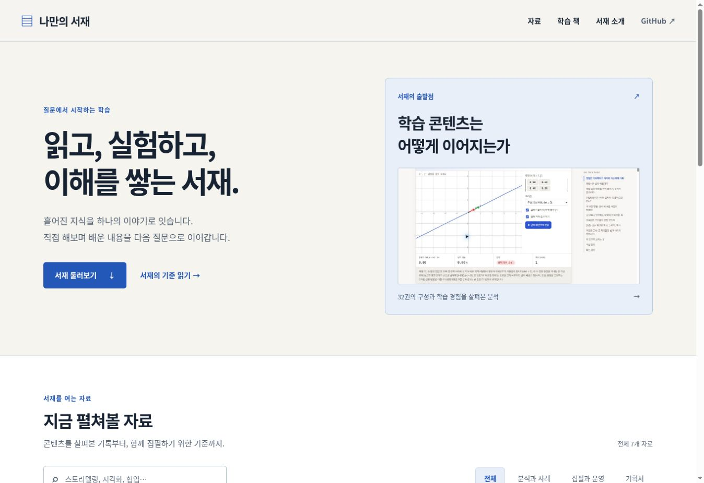

VALIDATION / 2026-10-07
검증 결과와 남은 일
참조 사이트 조사와 새 서재 검증을 구분해 기록합니다.
원 사이트에서 확인한 범위
| 검사 | 결과 | 한계 |
|---|---|---|
| 책·포털 | 출간 32권 소개 화면과 포털 14개 경로 열람 | 모든 장을 브라우저로 정독한 것은 아님 |
| 페이지 수집 | 648 URL 중 644 성공, 4개 HTTP 404 | 수집 시점의 응답·정적 HTML 기준 |
| 장 URL | 정상 응답 594개 | 중앙 카탈로그의 합계 584와 차이 있음 |
| 실험 앵커 | 3,903개 모두 페이지·앵커 존재 | 전체 실험 동작·수치 정확성 검증 아님 |
| 대표 조작 | RAG 분할·퀴즈, 광자 에너지, 수율 조사, 행렬 투영 | 대표 경로의 입력과 결과 확인 |
| 3D | 픽셀 분해 입력은 바뀌나 캔버스 미표시 | 조사 브라우저에서 WebGL 비활성 로그 확인 |
근거: 전체 목록 · 직접 조작 기록 · 화면 출처. 참조 사이트의 모든 실험이나 학습 효과를 검증했다는 뜻은 아닙니다.
새 서재에서 확인한 것
python3 scripts/validate.py로 12개 HTML 문서의 내부 파일·앵커·중복 ID, JSON, 카탈로그 동기화, Python 함수 길이, 조사 데이터의 항목 수를 검사했으며 오류는 0개입니다.
단위 테스트 8개가 통과했습니다. 링크·앵커·카탈로그 참조 오류의 탐지, 책이 없을 때의 안내, 공개된 책에만 읽기 링크 제공, 안전한 URL과 문자 처리, 반복 생성 시 동일한 결과를 확인합니다.
| 실제 사이트 동작 | 확인 결과 |
|---|---|
| 메인페이지 | HTTPS로 정상 열람, 조사 이미지 표시, 자료 7개 표시 |
| 검색 “시각화” | 분석 리포트와 운영 기준, 2개 자료 표시 |
| 기획서 분류 | 책 기획서와 장·실험 기획서, 2개 자료 표시 |
| 결과 없는 검색·초기화 | 빈 결과 안내 후 전체 7개 자료로 복귀 |
| 문서 이동 | 메인 → 분석 리포트 → 서재 복귀 확인 |
| 조사 목록 | “404만” 필터에서 4 / 648 페이지 표시 |
| 화면 폭 | 1348px 화면에서 문서 폭도 1348px, 가로 넘침 없음 |
최초 문서 작성 당시에는 로컬 file: 주소가 브라우저 정책에 막혀 렌더링을 확인하지 못했습니다. 이번에는 공개된 HTTPS 주소에서 위 동작을 직접 확인했습니다. 모바일 실기기·화면 읽기 프로그램은 테스트하지 않았으며, 작은 화면용 CSS 규칙과 접근성 속성은 코드로 확인했습니다.
코드와 원자료의 검사 결과는 검증 기록에 보관합니다. 브라우저 확장 프로그램의 통신 오류는 페이지 자체 오류와 구분합니다.
GitHub Pages 공개
ljd6805/my-bookshelf의 main 브랜치 루트에서 자동 배포하도록 설정했습니다. 최초 배포 실행은 pages-build-deployment #1이며 성공 상태를 확인했습니다.
공개 서재 열기. 최초 화면·동작 확인의 대상 커밋은 7e30d62f0b7f834bd52f0f6c0f8bb2433540a86c입니다. 이후 변경 이력은 저장소에서 확인할 수 있습니다.

배포 설정과 수정 절차는 서재 구성과 책 추가 방법, 현재 인계 상태는 작업 상태에 기록합니다.
서가 큐레이션과 책 사이 링크 · 2026-10-08
- 구조 확인:
validate.py오류 0개,build_catalog.py --check통과, 서가 단위 테스트(큐레이션 4개·교차 링크 검사 1개 추가)와 네 책의 책별 테스트 통과. - 동작 확인: Chromium으로 1280·390·320px에서 큐레이션 구역의 가로 넘침 없음, 단계·개념 펼치기, 머리말 "읽기 흐름" 링크 표시, 검색어 "dot product"로 AI Book과 벡터와 행렬 책이 걸러지는 것을 확인했습니다. 책 사이 새 링크 6곳을 직접 눌러 도착 장의 제목을 확인했습니다.
- 수치 정확성: 경로 카드의 총 시간은 단계 시간의 합으로 자동 계산합니다. 단계 시간은 각 책이 밝힌 장 읽기 시간을 옮긴 값입니다.
- 학습 효과: 새 읽기 경로 3개를 실제 독자가 따라가 본 기록은 없습니다(L4 미확인). Safari·Firefox·실기기·화면 읽기 프로그램도 확인하지 않았습니다.
- 노선도·지식 지도 개편(2026-10-08): Chromium 1280·390·320px에서 가로 넘침 없음. 주소 #path-…로 해당 노선 열기, 탭 클릭과 좌우 화살표 전환, 정거장 선택 시 해당 단계만 표시(
aria-current="step"), 지도에서 개념 클릭·키보드 초점으로 카드 전환과 선 강조, 720px 이하 지도 숨김과 카드 13개 표시, JavaScript를 끈 상태에서 노선 4개·정거장 21개가 모두 보이는 것을 확인했습니다. 지도 글자가 겹치지 않는지는 단위 테스트로 검사합니다. 화면 읽기 프로그램으로 SVG 지도를 읽어 보지는 않았습니다. - 책 추가 규칙 검사(2026-10-08): 새 규칙을 넣기 전 main에서 검사기를 돌리면 LLM 시스템 책이 "공통 개념 1개"와 "들어오는 링크 없음"으로 걸렸고, 연결을 채운 뒤 0개가 되었습니다. 규칙 단위 테스트 4개(완전히 연결된 서가 통과, 새 책의 다섯 항목 각각 실패, 기획 중인 책 제외, 없는 앵커·중복 검출)와 다섯 권 지도 겹침 검사가 통과했습니다. 1280px에서 다섯 권 지도와 노선 전환을 Chromium으로 확인했습니다. LLM 시스템과 확률과 통계가 같은 색(sage)인 점은 서가 진열 정리 PR에서 바뀔 예정입니다.
금융 시리즈 3권 「금리와 채권」 · 2026-10-13
- 구조 확인: 10장·10개 실험, 복습 30문항, 책 테스트 49개(계산 대표값·경계값, 본문·흐름·문항 숫자, 10개 예측 질문의 답, 장 경로, 설계표 L2와 실험 안내 일치),
validate.py·build_catalog.py --check·서가 단위 테스트 통과. 관문 G0~G7과 팀장 승인, G4 지침 대조표 K1~K6과 메모 56행의 지침 표시는 책 제작 기록. - 동작 확인:
books/bonds/tests/browser.cjs로 1280·390·320px 61개 화면, 실험 30회 조작, 예측 질문 사례 30회, 페이지 오류 0(콘솔 404 한 건은 검사 필터가 허용하는 자원 요청). 표지(320×150 정지 그림)와 서가 삽화(시소, 동작 줄이기에서 정지)의 글자가 viewBox 안에 있음. 서가의 책등·닫힌 표지·금융 섬과 rates-and-assets 노선은 G5에서 확인. - 수치 정확성: 검수팀 새 세션이 책 코드를 쓰지 않고 파이썬으로 가격·만기수익률·경과이자·듀레이션·볼록성·DV01·스프레드 부도 확률·고든 모형·곡선 모형·마지막 과제의 1년 수익을 따로 계산해 일치. 오류 5건(10장 (가) 수익의 해석, 동결 대조의 3.77%p, 국고채 만기 목록 단서, FEDS 공저자, ADB 절 표기)을 고침(팩트·출처 검수 1회차 fixed). 문체 편집 뒤 뜻 보존(wording)도 같은 회차에서 대조해 되돌린 문장 없음.
- 학습 효과: 첫 독자 리허설로 정의 없던 용어(가산금리), 빠진 셈(2장 전달 규칙, DV01), 단추 이름 혼동을 고침. 실제 독자 학습 효과는 측정하지 않았습니다.
- 확인하지 못한 것: 2026-10-22 금융통화위원회 결정(본문은 “2026-10-12 현재 3.00%”, 결정 뒤 수정 회차 필요), 한국은행·금융투자협회 채권정보센터·국고채 누리집 한국어 쪽 원문(금리는 의사록 재게시본과 장 마감 보도로 대조), 국고채 단가 끝수·날짜 셈 관행(본문에 가정으로 밝힘), 국고채 2년물의 현재 발행 여부, 한국 국고채 기간 프리미엄 추정치, 신용평가사 등급 정의 원문, 개인투자용 국채 중도환매 월 한도, Safari·Firefox·화면 낭독기, 검수 세션의 실행 id.
금융 시리즈 8권 「가격은 어떻게 흔들리는가」 · 2026-10-12
- 구조 확인: 10장·10개 실험, 책 테스트 50개(계산 대표값·경계값, 본문·흐름·문항 숫자, 10개 예측 질문의 답, 장 경로, 설계표 L2와 실험 안내 문장 일치, 12권 시나리오와 첫 120일 종가 일치),
validate.py·build_catalog.py --check통과. 관문 G0~G7 기록과 팀장 승인은 책 제작 기록. - 동작 확인:
books/volatility/tests/browser.cjs로 1280·390·320px 48개 화면, 실험 30회 조작과 예측 질문 사례 30회, 콘솔 오류 0. 몬테카를로 실험은 다시 계산 200ms 이하. 서가에서 펼쳐 새로 그린 표지, 움직이는 삽화(설명을 줄여 320px에서도 보이게 한 뒤), 금융 섬과 노선의 새 정거장을 확인. - 수치 정확성: 검수팀 새 세션이 책 코드를 쓰지 않고 파이썬으로 일일 재조정 손실, 연율화, ATR, 자기상관, 겹치는 분산비와 z, 구간 통과, 최대 낙폭, 몬테카를로 수치를 따로 계산해 모두 일치. 마지막 과제의 비교 경로 길이가 하루 길던 오류(85→84, 731→730)를 고침. 병합 전 자동 코드 리뷰가 비교 경로의 시작가가 고른 구간과 상관없이 20,000원이던 점을 짚어, 격자 선 통과 횟수가 시작 위치에 달려 있으므로 구간의 첫 종가에서 시작하게 고침(1년 전체 20,600원: 322회 이상 84→73개, 생성한 130일 16,620원: 56회 이상 819→292개, 낙폭과 z·ρ₁ 비율은 그대로). 같은 리뷰가 짚은 대로 섬의 읽기 순서가 아직 나오지 않은 권을 건너뛸 때도 시리즈 관계를 잃지 않고 사이 권이 준비 중이라고 밝히게
scripts/reading_order.py를 고침. - 학습 효과: 첫 독자 리허설에서 다른 책 표기, 빠진 계산 한 단계, 정의 없던 용어(중심극한정리·기각), 본문과 실험의 자기상관 값 차이, 마지막 장의 날짜 표현을 고침. 실제 독자 학습 효과는 측정하지 않았습니다.
- 확인하지 못한 것: 레버리지 ETP 거래 요건의 공식 원문(2026년 7월 강화의 시행일이 보도마다 다름, 20좌 시행 여부), 레버리지 상품 가격제한폭 ±60%의 원문, Lo–MacKinlay 원문의 점근 분산식(표준식과 시뮬레이션으로만 확인), Cont·Poterba–Summers·Kim–Nelson–Startz·Magdon-Ismail 논문 전문, 실제 지수 데이터로 계산한 첨도·자기상관.
금융 시리즈 12권 「격자 하나에서 손익이 갈리기까지」 · 2026-10-12
- 구조 확인: 13장·13개 실험, 책 테스트 40개(계산 대표값·경계값, 본문·흐름·문항 숫자, 13개 예측 질문의 답, 장 경로, 설계표 L2와 실험 안내 문장 일치, 결과 읽기의 L2 답),
validate.py·build_catalog.py --check통과. 관문 G0~G7 기록과 팀장 승인은 책 제작 기록. - 동작 확인:
books/grid/tests/browser.cjs로 1280·390·320px 57개 화면, 실험 39회 조작(기본값·미리 정한 경로 단추·입력 끝값·빈 입력 오류·초기화)과 예측 질문 사례 39회, 콘솔 오류 0. 서가에서 펼쳐 표지, 움직이는 삽화(390·320px 글자 잘림을 고친 뒤), 금융 섬의 읽기 순서와 새 노선 카드, 책 중심 보기를 확인. - 수치 정확성: 검수팀 새 세션이 책 코드를 쓰지 않고 파이썬으로 호가단위·가격제한폭·한 칸 왕복 손익·최소 간격·등차/등비 격자와, 미리 정한 경로(박스권·상승·하락·6개월)에서 격자·보유·적립식·리밸런싱·최대 낙폭·멈춤 규칙을 따로 계산해 본문·문항·결과 읽기의 숫자와 모두 일치. 수수료 0.015%와 주문마다 원 단위 버림은 이 책의 가정임을 밝힘.
- 학습 효과: 첫 독자 리허설에서 정의 없던 “가격 점”, 조사 오류, 320px 표 접근, 12장 예측 질문의 답이 본문에 먼저 나오던 문제, 6개월 그림의 달 표기를 고침. 실제 독자 학습 효과는 측정하지 않았습니다.
- 확인하지 못한 것: 2026년 증권거래세율은 보도 두 건으로만 확인(시행령 원문 미열람), 호가단위 개편 시점(2023년 1월)은 거래소 화면에 날짜가 없음, 증권사 멈춤 주문이 다른 주문을 취소하는지, Booth·Fama와 Odean 논문 전문은 요약·초록만 읽음, 수수료 0.015%와 주문마다 원 단위 버림은 증권사 원문으로 확인하지 못한 이 책의 가정.
금융 시리즈 1권 「돈의 시간 가치」 · 2026-10-12
- 구조 확인: 10장·10개 실험, 책 테스트 34개(계산 대표값·경계값, 장 경로, 설계표 L2와 실험 안내 문장 일치, 4장 그림 숫자),
validate.py·build_catalog.py --check통과. 관문 G0~G7 기록과 팀장 승인은 책 제작 기록. - 동작 확인:
books/money/tests/browser.cjs로 1280·390·320px 39개 화면과 실험 30회 조작(비교 예제·경계 입력·빈 입력 오류·초기화), 콘솔 오류 0. 서가에서 펼쳐 표지와 움직이는 삽화, 금융 섬과 책 중심 보기, 새 노선 카드를 확인. - 수치 정확성: 검수팀 새 세션이 책 코드와 따로 파이썬으로 본문·흐름 상자·문항·결과 읽기의 숫자 약 120개와 실험 10개의 대표값·경계값(금리 0, IRR이 없거나 둘인 흐름, 손실에는 세금 없음)을 대조해 모두 일치. 마지막 과제의 상환 효과는 연복리 근사(7,146,096원, 월복리로는 7,180,083원)임을 본문과 조사 노트에 밝힘.
- 학습 효과: 첫 독자 리허설에서 예측 질문의 답이 개념 문단에 먼저 나오던 문제, 4장 그림이 거꾸로였던 문제, ln 설명 누락을 찾아 고침. 실제 독자 학습 효과는 측정하지 않음.
- 확인하지 못한 것: 법령 원문(소득세법, 금융소비자보호법 감독규정, 대부업법 시행령)은 열지 못해 공식 보도자료의 재게시본·금융사 안내·보도로 대조함. 이자소득세 15.4%와 신용점수제는 보도·안내 수준으로 확인. 은행의 원 단위 끝수 처리는 확인하지 못함. 기준금리(3.00%, 다음 결정 2026-10-22)와 소비자물가(2026년 9월 2.9%, 12월 기준 연도 개편)는 2026-10-12 기준이며 바뀔 때 다시 확인해야 함.
금융 시리즈 4권 「주문 한 장이 체결되기까지」 · 2026-10-12
- 구조 확인: 13장·14개 실험, 책 테스트 27개(계산 대표값·경계값, 장 경로, 실험 안내 숫자 대조),
validate.py·build_catalog.py --check통과. 관문 G0~G7 기록과 팀장 승인은 책 제작 기록. - 동작 확인:
books/market/tests/browser.cjs로 1280·390·320px 47개 화면과 비교 예제·경계 입력·초기화 42회 조작, 콘솔 오류 0. 서가에서 펼쳐 표지와 움직이는 삽화(320px 196×94px), 금융 섬, 새 노선 카드를 확인. - 수치 정확성: 검수팀 새 세션이 책 코드와 따로 계산해 상·하한가(19,950 → 25,900/13,970, 52,300 → 67,900/36,700), 왕복 비용, 결제일, 권리락 기준가를 대조. 정적 VI가 정확히 −10%에서 부동소수점 오차로 걸리지 않던 계산을 고침(팩트·출처 검수 1회차 fixed).
- 학습 효과: 첫 독자 리허설로 결과가 예측보다 먼저 보이던 문제를 찾아 결과 읽기를 접고 내 예측 칸을 둠. 실제 독자 학습 효과는 측정하지 않음.
- 확인하지 못한 것: 법령·거래소 규정 조문 원문(국가법령정보센터, 거래소 법규서비스)은 열지 못해 공식 안내 페이지와 보도로 대조함. 권리락 기준가의 끝수 처리와 정정 주문의 우선순위는 확인하지 못해 본문에 가정·흔한 안내로 적음. 거래소 2026년 휴장일 공지 원문 미열람. 시간에 따라 바뀌는 규칙(애프터마켓, 거래세, 넥스트레이드 시간)은 2026-10-12 기준이며 개정 때 다시 확인해야 함.
섬마다 추천 읽기 순서 · 2026-10-12
- 구조 확인:
validate.py오류 0개, 읽기 순서 Python 단위 테스트 6개 새로 작성(실제 카탈로그의 AI공학 순서가 시리즈 1~20권과 같음, 인공지능 AI Book → LLM 시스템 → 추론 최적화 → 트랜스포머 속, 지식관리 검색과 RAG가 먼저, 근거 링크가 실제 앵커를 가리킴, 표 없는 책은 서가 순서, 표 없는 책이 표로 이어진 사슬을 끊지 않음, 다수결과 시리즈 우선). - 동작 확인: Chromium 1280·390·320px에서 인공지능 섬을 고르면 4단계 순서와 책등 번호 4개가 나오고(트랜스포머 책 병합 뒤 다시 확인) 가로 넘침 0px, 콘솔 오류 0개. AI공학 섬은 다섯 권만 먼저 보이고 "나머지 15권 순서 보기"로 펼쳐짐, 근거 단추가 해당 읽기 노선 탭을 엶, 목록 보기 맨 위의 분야별 순서가 분야 단추로 걸러짐(수학 → 1개)을 확인했습니다.
- 학습 효과: 순서는 기존 노선과 시리즈에서 기계적으로 뽑은 것이라, 수학 섬(벡터와 행렬 → 확률과 통계)처럼 근거가 없는 곳은 서가 순서입니다. 두 책을 잇는 노선이 생기면 자동으로 바뀝니다. 실제 독자가 이 순서로 읽기 쉬운지는 확인하지 않았습니다.
지식 지도 건너편 다리와 이름표 · 2026-10-12
구조: tests/test_atlas_model.mjs에 고리 건너편 다리가 가운데 섬과 다른 섬 안으로 들어가지 않는지(가로·세로 배치 모두) 검사를 더했습니다. 고치기 전 곧은 점선 코드에서는 제어점이 가운데 섬 안에 있어 이 검사가 실패합니다. 동작: 1280·390·320px에서 지식관리·수학 섬을 골라 점선이 가운데 섬을 둘러 가고, 이름표가 "AI공학과 개념 6", "인공지능과 개념 6"처럼 서로 구분되며, 고르지 않은 건너편 점선이 흐리게 남지 않는지 Playwright 화면으로 확인했습니다. 남은 것: 고리 섬이 아홉 개를 넘는 큰 지도에서는 바닷길끼리 일부 겹칠 수 있으나, 한 번에 한 섬의 다리만 보이므로 실제 화면에서는 드뭅니다.
지식 지도 섬 지도 개편 · 2026-10-08
- 구조 확인:
validate.py오류 0개,build_catalog.py --check통과, 서가 Python 단위 테스트(지도 자료·목록 묶음·30권 60개념 3개 다시 작성)와 JavaScript 테스트 17개(지도 배치 9개 새로 작성) 통과. 배치 테스트는 섬 겹침 없음, 모든 섬이 판 안, 같은 입력에 같은 결과, 가운데 섬 선택, 고리 순서, 33권·9분야 모의 서가, 책 중심 보기의 개념 이름표 겹침 없음을 검사합니다. - 동작 확인: Chromium 1280·390·320px에서 페이지 가로 넘침 0px, 콘솔 오류 0개. 섬 클릭과 Enter로 섬 고르기, 설명판의 책 단추로 책 중심 보기 들어가기(키보드로 들어가면 설명판 제목으로 포커스 이동), 개념 이름표 Space로 고르기, 바깥 책으로 가운데 바꾸기, "가운데 책" 고르기, 다리 고르기와 건너편 다리 점선 표시,
#concept-memory-hierarchy로 개념을 고른 채 시작(책등 8권 밝힘), 분야 단추(지식관리 → 섬 고름·목록 6개)와 되돌리기(목록 17개), 지도·목록 전환, 스크립트를 끈 상태에서 목록만 보이고 지도 도구가 숨는 것을 확인했습니다. 가상 33권·9분야 자료로 섬 지도와 책 중심 보기를 그려 겹침 없이 늘어나는 것을 눈으로 확인했습니다. - 남은 확인: 화면 읽기 프로그램으로 SVG 단추의 읽기 순서와 설명판 알림은 확인하지 못했습니다. Safari·Firefox에서 SVG 글자 배치와 휴대폰 실제 기기 터치는 확인하지 않았습니다. 책 중심 보기에서 바깥 책이 20권을 넘으면 선이 촘촘해지므로, 책이 더 늘면 개념별 선만 남기는 기본값을 다시 검토합니다.
장별 진도와 복습 퀴즈 · 2026-10-12
- 구조 확인:
python3 scripts/validate.py가 29권 모두의 공통 스크립트book-study.js와, 퀴즈가 있는 네 권(컴퓨터원리·확률과 통계·벡터와 행렬·검색과 RAG)의review.json모양과 장 빠짐을 검사합니다. 검사기 단위 테스트 6개(tests/test_study_rules.py) 통과. - 동작 확인: Chromium 1280·390·320px에서 네 권의 첫 장 복습 문항을 풀어 ★ 복습 완료와 목차 표시를 확인했고, 다음 장에서 "앞 장 다시 꺼내기" 문항이 첫 장에서 나오는 것, 장 끝까지 내려가 8초 뒤 ✓ 끝까지 읽음, 책 첫 화면의 이어 읽기 안내, 퀴즈가 없는 AI Book의 진도 표시, 서가의 "이어서 공부하기" 목록과 펼친 책의 진도 줄을 확인했습니다. 세 폭 모두 가로 넘침이 없고 콘솔 오류와 404가 없었습니다.
- 수치 정확성: 진도 계산과 앞 장 고르기는
tests/test_study_model.mjs7개로 대표값·경계값(첫 장, 퀴즈 없는 장, 깨진 기록, 틀린 답 뒤 같은 문항)을 확인합니다. 퀴즈 80문항의 정답·수치·해설은 집필하지 않은 새 세션이 검수해 네 권의docs/fact-review.html에 회차를 남겼습니다(2권 fixed, 2권 passed). - 학습 효과(L4): 실제 독자 시험을 하지 않았으므로 판단하지 않았습니다.
- 확인하지 못한 것: Safari·Firefox, 화면 낭독기에서의 실제 낭독, 여러 탭을 동시에 연 경우(
storage이벤트로 다시 그리도록 했지만 브라우저로 확인하지 않음). 컴퓨터원리("이 장을 읽었어요" 단추)와 벡터와 행렬(목차의 "읽음")에 있던 자체 읽음 표시는 공통 진도와 겹치지 않도록 지웠습니다. 두 책에 예전 방식으로 남은 기록(bookshelf:how-computers-work:v1:progress,bookshelf:linear-algebra-world:v1:progress)은 옮기지 않았습니다. 나머지 25권의 퀴즈는 아직 없습니다(scripts/study_rules.pyPENDING). - 팀장 승인(2026-10-12, 집필하지 않은 새 세션이
data/agent-team.json페르소나로 검토): 1차에서 해원(교과과정)·은재(지식조사)·서윤(기획·연결) 승인, 지안(교수법)·나래(글작성)·리안(시각·실험)·정민(검수)·한결(편집장) 조건부 승인. 조건 네 가지를 같은 PR에서 고쳤습니다. ① 지안: 이 장 문항은 처음 고른 답만 복습 완료로 세고, 맞혔거나 답을 보여 준 문항은 보기를 잠금. ② 나래: 답을 보여 줄 때 "✗ 이번에도 아닙니다. 답은 N번입니다."로, 문장 속 장 번호를 "3장"처럼. ③ 리안: 컴퓨터원리·벡터와 행렬·확률과 통계의 자체 진도 표시를 지워 목차의 표시를 하나로(컴퓨터 장 제목에 ✓가 섞이던 문제 포함), 상자 전체 알림을 문항 알림과 겹치지 않게. ④ 정민: 복습 퀴즈 검수 회차의 "확인하지 못한 것"에 검수자와 집필자가 다른 하위 에이전트 실행이지만 실행 id는 남기지 않았다는 점을 밝힘(처음에 지난 보충 회차에 잘못 붙인 것을 2차 확인에서 찾아 옮김). 2차 확인: 지안·나래·리안 승인. 3차 확인: 정민 승인(검수 기록 위치), 한결(편집장) 병합 승인. 지안이 막지 않는 의견으로 남긴 "바로 앞 장으로 넘어간 경우의 안내 문구"도 고쳤습니다. 같은 PR에서 Codex 검토 지적도 반영해, 앞 장 다시 꺼내기는 펼쳐 보기만 한 장이 아니라 끝까지 읽었거나 복습한 장에서 고릅니다. 후속으로 미룬 것: 검색과 RAG 퀴즈에서 정답 보기가 가장 긴 문항이 20개 중 13개라 길이로 답을 짐작할 수 있는 점(교수법·글작성), 앞 장 문항의 답 공개 때 그 장으로 가는 링크, "이어서 공부하기"를 읽기 노선·시리즈 다음 권과 잇는 일(기획·연결).
기존 책 문체 개정(한국어 문장 지침 K1~K6) · 2026-10-13
- 요청: 서재 주인이 새 한국어 문장 지침으로 기존의 모든 책도 검수하자고 요청했습니다(스레드 「기존 책 한국어 지침 검수」). 공개된 36권 가운데 지침으로 처음부터 쓴 금융 3권을 뺀 35권이 대상이며, 묶음마다 PR 하나로 올립니다.
- 규칙: 문장만 다듬는 일이라 목차·조사·실험을 다시 넘기는 개정 표(G2·G3·G4·G6·G7)는 맞지 않습니다. 그래서
data-kind="style"관문 표(G4 나래·G6 정민·G7 한결)와 장마다style-k-장ID메모를 요구하는 문체 개정을scripts/team_gates.py에 더했습니다. 단위 테스트 1개(장 메모 누락·나래 승인·대조표·G6 누락)를 더했습니다. - 묶음 1 · 금융 4권(1·4·8·12권): 다온 46곳 손질(시장 15·시간 가치 14·그리드 11·가격 변동 6). 다온이 사실 문제로 넘긴 두 곳은 집필 쪽이 고쳤습니다(1권 “지금은 4권만 공개” 시리즈 안내 2문장, 12권 4장 “새벽전자의 실제 기록” → 가상 시나리오 기록). 유진 뜻 보존 검수 네 권 모두 passed(되돌린 문장 0). 나래·정민 승인. 책 테스트(27·35·40·50개)와
test_book_content.mjs통과, 시장 책은 브라우저 검사(화면 47·실험 42)도 통과. - 묶음 2 · AI·기초 6권(ai·transformer·algorithms·information·llm-performance·linear-algebra): 다온 손질 AI 19·트랜스포머 13·알고리즘 13·정보 19·LLM 성능 17·선형대수 16곳. 다온이 사실 문제로 넘긴 곳 가운데 8곳은 집필 쪽이 고쳤습니다(트랜스포머 그림 12-1 “200단계까지”와 마스크 안내의 추정 표현, 알고리즘 8장 해설, 정보 5장 연결 문장·9장 복습 보기·5장 허프만 문장, 선형대수 마지막 과제 고유벡터 문장·3장 “압도적”). 정보 책 허프만 문장은 유진이 “일반적으로 보장되지 않는다”고 지적해 ⌈−log₂Q⌉ 문장으로 고쳤고 정민이 확인했습니다. 나래는 정보 책의 “(1,387비트)이”를 보류했습니다. 괄호 뒤 조사는 괄호 앞말에 맞추므로 원래 “가”가 맞아 원문으로 되돌렸습니다. 유진 검수 다섯 권 passed, 정보 책 fixed. 책 테스트(20·23·29·35·42·19개) 통과.
- 묶음 3 · 기초 5권(llm-gpu·computer·probability·rag·knowledge-graph): 다온 손질 27·14·17·17·8곳. 확률 8장 정보 이론 링크의 이동 이유(“우도를 최대로 하는 확률로 지은 부호가 가장 짧게 적는다”)는 사실 수정으로 집필 쪽이 고쳤고 정민이 −log₂(우도)와 KL ≥ 0으로 확인했습니다. 유진 검수 다섯 권 passed(되돌린 문장 0). 책 테스트(35·21·30·33·19개) 통과.
- 검사하지 못한 것: 시장 책 밖의 세 권은 문장만 바뀌어 브라우저로 화면을 다시 열지 않았습니다. 다온의 “그대로 둠” 판단은 유진이 다시 판정하지 않았습니다.
- 남은 일(비차단): 나래·정민이 다음 개정 후보로 남긴 것: AI 12장 “임계값/문턱” 통일, LLM 성능 7장 “의미를 가집니다”와 8장 online softmax 목적어, 선형대수 5장 교환 조건 표현, LLM GPU 11장 “서로 다른 맥락에서 정한 값”, 컴퓨터 2장 TextEncoder 문장, 확률 8장 “가장 짧게”에 “이상적 길이로”를 붙일지. 금융 4권 6장 “종가는 … 휘둘리지 않게 합니다”의 주어 어긋남, 8권에서 “실제 기록”이 가상 데이터를 가리킨다는 점을 처음 나오는 자리에 밝혔는지 다음 개정 때 확인.
한국어 문장 지침 도입 · 2026-10-13
- 요청: 서재 주인이 운영하는 편집실의 한국어 기술문서 문체 지침 v1.1을 도서 검수에 강하게 쓰자고 요청했습니다. 공개 페이지는 작업 환경의 프록시가 막아 원본 저장소
ljd6805/mail-reports(커밋 4737628)의 같은 파일로 내용을 확인했습니다. - 구조 확인: docs/11을 더했고,
scripts/team_gates.py는 2026-10-13 이후 G4에 지침 대조표(K1~K6)와 메모 행마다 지침을,scripts/fact_review.py는 같은 날 이후 검수 회차에wording항목을 요구합니다. 개정 회차는 지침을 적은 메모만 검사해 옛 메모를 소급하지 않습니다. 단위 테스트 2개를 새로 썼고validate.py오류 0개, Python 단위 테스트와 Node 테스트가 통과했습니다. 이미 공개된 기록 가운데 새 검사로 깨지는 것은 없습니다. - 팀장 승인(집필하지 않은 새 세션이 페르소나로 검토): 나래 승인(1차에 문서 문장 3곳과 사례 표 분류 설명을 고치게 함), 정민 승인(1차에 개정 회차가 옛 메모를 소급 검사하는 결함을 찾아 고치게 함), 한결 승인(기존 도서에 적용할 순서를
data/work-state.json에 남기는 조건). - 검사하지 못하는 것: 다온이 적은 지침이 그 문장에 맞는지, 유진이 실제로 원문과 대조했는지, 개정 회차에서 고친 장마다 메모를 태그했는지는 검사기가 보지 못하고 나래(G4)와 정민(G6)의 승인에 맡깁니다. 대조표 칸에 형식만 채워도 통과합니다.
- 남은 일: 기존 공개 도서에 지침 대조 적용(
work-state.json의korean_writing_guidelines.next). 집필 중인 금융 3권은 첫 G4부터 적용됩니다.
팩트·출처 검수 · 2026-10-08
2026-10-08 사용자는 서재의 그라운드룰로 팩트·출처 검수를 정했습니다. 책을 새로 만들거나 크게 고친 뒤에는 그 책을 쓴 에이전트가 아닌 새 에이전트(GPT든 Claude든 다른 세션)가 책을 검수합니다. 쓴 사람은 자기 오류를 같은 가정으로 다시 읽기 쉽기 때문에, 검수는 처음 읽는 눈으로 해야 합니다.
| 검사 항목 | 검수자가 확인하는 것 |
|---|---|
사실 주장 (facts) | 본문의 주장이 출처와 맞는지, 시점이 지난 정보가 없는지 |
수식·수치 (numbers) | 식을 다시 유도하고 예시 숫자와 단위를 손으로 계산 |
실험 계산 (experiments) | 대표값·경계값을 책 코드와 따로 계산해 화면 결과와 대조, 실제 계산·시나리오·비유 구분이 맞는지 |
용어 (terms) | 정의와 한영 용어가 표준 문헌과 맞는지, 책 안에서 일관된지 |
출처 링크·인용 (sources) | 링크가 열리는지, 인용한 내용이 원문에 있는지, 확인일이 있는지 |
절차. 집필 에이전트가 책을 마치면 검수 에이전트를 새로 할당합니다. 검수자는 결과를 books/주제/docs/fact-review.html에 검수 기록 양식대로 남기고, 집필 측이나 검수자가 오류를 고친 뒤 회차 결과를 passed 또는 fixed로 닫습니다. 검수 기록이 닫히기 전에는 책을 published로 올리거나 병합하지 않습니다. 기록에는 검수자·집필자·날짜·범위·다섯 항목의 상태·발견과 수정·확인하지 못한 것이 들어갑니다.
자동 검사. python3 scripts/validate.py(scripts/fact_review.py)는 공개된 책마다 기록 파일이 있는지, 가장 최근 회차의 검수자와 집필자가 다른지, 날짜·범위가 있는지, 결과와 다섯 항목 중 open이 없는지 검사합니다. 내용이 실제로 맞는지는 검사기가 판단하지 못하므로, 검수의 질은 기록의 근거로 확인합니다.
기존 책. 규칙 이전에 공개한 일곱 권은 scripts/fact_review.py의 PENDING에 올려 두었습니다. 기존 도서 검수가 책마다 기록을 남기면 그 책을 목록에서 지웁니다. 기록이 생겼는데 목록에 남아 있으면 검사가 실패하므로 목록은 줄어들기만 합니다.
책 제작 관문 검사 · 2026-10-12
책 제작 팀의 인계 관문 G0~G7을 scripts/team_gates.py가 검사합니다. 기준과 기존 책 예외는 팀 문서의 관문 검사에 있습니다.
- 구조 확인:
validate.py오류 0개. 트랜스포머 속을 열어 보기의 제작 기록(8개 관문, 문체 비평 메모 14개, 설계표 14행)이 그대로 통과합니다. 단위 테스트 13개는 관문이 빠지거나 칸이 비었을 때, 팀장 승인이 빠졌을 때, 장 ID와 맞는 문체 메모나 설계표 행이 없을 때, 조사 노트가 없을 때, 집필 중에 관문을 건너뛸 때, 새 책이 개정 표 뒤에 숨을 때를 잡아냅니다. - 검사하지 못한 것: 기록 내용이 사실인지, 문체 비평이 실제로 원고를 읽고 썼는지는 검사기가 판단하지 못합니다. 기존 책을 크게 고쳤는데 새 검수 회차도 남기지 않으면 관문 검사도 알아채지 못하므로, 이 경우는 팩트·출처 검수 규칙과 편집장의 판정에 기댑니다.
시리즈 이어 읽기 · 2026-10-08
- 구조 확인:
validate.py오류 0개, 서가 Python 단위 테스트(시리즈 2개 새로 작성: 권 순서·출간 수·분야, 없는 책·순서 오류·상태 누락)와 Node 테스트 통과. - 동작 확인: Chromium 1280·390·320px에서 페이지 가로 넘침 0px, 시리즈 줄 가로 밀기, 3권을 누르면 3권 책으로 이동하고 권 번호가 저장됨, 저장된 4권이 "마지막"으로 표시되고 단추가 "4권부터 이어 읽기"로 바뀜, 분야 단추 수학에서 시리즈가 숨고 AI공학에서 보임.
- 남은 확인: 책 안의 이전·다음 권 이동이 같은 저장 키를 쓰는지는 시리즈 집필 쪽 작업입니다.
다음 담당자의 첫 행동
첫 책의 주제·독자·학습 후 할 일을 정합니다. 책 기획서를 작성한 뒤 완결된 한 장을 만들고 세 장으로 확장합니다. books/주제/에 책을 추가하면 카탈로그에 상대 경로를 등록하고, 책에서 서재로 돌아오는 링크를 확인합니다.
현재 구현 범위는 메인페이지, 자료 탐색, 책 목록을 추가하는 구조와 배포입니다. 사용자 계정, 진도 저장, 책 전체 검색, 여러 책의 학습 경로 화면은 구현하지 않았습니다.
유리 서가 구현 검증 · 2026.10.07
2026-10-08 책 열기 연출 강화의 확인 범위와 미검증 항목(실제 체감 속도, Safari·Firefox, 저사양 기기)은 구현 기록에 남겼습니다.
자료 13개 전체의 열기·제목·닫기, 검색·분류·초기화, 키보드 복귀, 동작 줄이기, 네 가지 프레임 폭을 확인했습니다. 자동 테스트는 Python 14개와 JavaScript 4개가 통과했습니다.
아래 초기 기록은 당시 결과로 유지합니다. 최신 화면의 검사 범위·수정한 문제·미검증 환경은 유리 서가 구현과 검증, 기계 판독 결과는 validation-result.json에 있습니다.
확률과 통계 책 검증 · 2026.10.08
책 테스트 18개(계산 14개, 경로·학습 흐름·교차 링크·카탈로그 4개)와 validate.py가 통과했습니다. Chromium에서 1280·390·320px로 12개 경로와 실험 8개의 조작·키보드·초기화를 확인했습니다.
확인하지 못한 항목: 실제 독자의 학습 효과(L4), Safari·Firefox·실제 모바일 기기·화면 읽기 프로그램·저사양 성능, 참고 링크 6개(집필 환경의 네트워크 제한으로 미열람). 세부 기록은 책 개발 문서에 있습니다.
같은 날 AI Book과 같은 레이아웃으로 바꾼 뒤 책 테스트 21개, validate.py, Chromium 1280·390·320px 확인을 다시 통과했습니다. 바뀐 화면 구성은 책 개발 문서에 있습니다.
책 구성 표준 문서 · 2026.10.08
책 구성 표준은 AI Book의 코드(index.html, app.js, content.js, lab-guides.js, visual.js, style.css)를 읽고 정리했습니다. Chromium으로 #home과 #attention을 1280·900·390px에서 열어 블록 순서, 장 목차 표시·숨김, 가로 넘침 없음을 확인했습니다.
확인하지 못한 항목: 다른 책이 이 표준을 만족하는지, 표준을 자동으로 검사하는 장치(아직 없음), Safari·Firefox·실기기.
컴퓨터원리 표현 개편 · 2026-10-08
본문과 9개 실험을 유지하고 읽기 화면·도표·작은 화면 배치를 개편했습니다. 계산·경로·시간 그림 검사 16개, 9개 실험 조작, 100개 화면 조합(10경로 × 5폭 × 2테마)을 통과했습니다. 로컬 CPU 장 Lighthouse 성능 96·접근성 100·권장사항 100이며 실사용 성능은 별도입니다.
변경 계획 · 구현·화면·검증 기록. Safari·Firefox·실기기·화면 낭독기·학습 효과는 미확인입니다.
LLM 시스템 교과서 · 2026-10-08
12장·14개 실험의 계산/경로 테스트 31개, 1280·390·320px의 실험 조작 42개 화면 통과. 세 화면 폭의 전체 장에서 문서 가로 넘침 없음. 계산 가정·화면 증거·검증 한계를 별도로 기록했다. 실제 GPU 벤치마크와 학습 효과는 검증하지 않았다.
공통 글꼴 체계 · 2026-10-08
서가와 다섯 권의 책이 assets/type.css(Pretendard 본문, Noto Serif KR 제목·책등, JetBrains Mono 숫자·코드)를 쓰도록 바꿨다. Chromium에서 서가와 각 책의 장 화면을 1280·390·320px로 열어 세 글꼴이 실제로 내려받아지는지(document.fonts), 가로 넘침이 없는지, 책등 제목이 18px로 잘리지 않는지 확인했다. 한 화면이 받는 글꼴은 약 0.8~1.1MB(유니코드 조각 27~34개)였다. 검사 환경은 리눅스 Chromium이라 macOS·Windows·iOS의 실제 렌더링과 읽기 편안함은 확인하지 못했다. 다른 사이트의 CSS는 네트워크 제한으로 직접 비교하지 못했고, 공개된 글꼴 설명을 근거로 골랐다.
닫힌 표지 종이 커버 · 2026-10-08
다섯 권의 닫힌 표지를 종이 커버(머리줄 → 가로 삽화 → 명조 제목·부제 → 꼬리줄)로 바꾸고 표지 규칙을 정했다. 사용자가 원형·네모·종이 커버 목업을 차례로 보고 마지막 안을 승인했다. validate.py 오류 0개, Python 단위 테스트(표지 검사 3개 추가) 통과. Chromium에서 1280px(펼치기 직전·표지가 넘어가는 중간), 390px, 320px로 다섯 권을 펼쳐 표지 안 글자·그림이 넘치지 않고(320px에서 scrollWidth = clientWidth), 애니메이션이 끝나면 표지가 사라지며, 콘솔 오류가 없음을 확인했다. 확인하지 못한 항목: Safari·Firefox·실기기의 표지 렌더링, 장·실험 수(cover_meta)는 각 책 설명에서 옮긴 값이며 책 내용과 자동 대조하지 않는다. 그림이 책 내용과 맞는지는 검사기가 판단하지 못한다.
LLM 추론 최적화 후속권
2026-10-08. 34개 JS·4개 Python helper 테스트, Chromium 47화면·39실험 화면 조작을 확인했습니다. 1280·390·320px의 서가 왕복·노선·지식 지도와 삽화 동작 줄이기를 확인했습니다. CI·Pages 배포 성공 후 공개 페이지에서도 서가 검사와 대표 수치 4개, 예제 링크를 확인했고 페이지 오류는 없었습니다. GPU·PyTorch 실행과 실제 모델 성능·학습 효과는 미검증입니다. 상세 결과와 공개 검사 근거는 책 검증 기록에 있습니다.
화면 폭에 맞춘 선반 쌓기 · 2026-10-08
단 나눔 계산은 Node 단위 테스트(경계값: 폭이 책 한 권보다 좁을 때, 한 단보다 긴 분류 묶음, 빈 서가)로 확인했습니다. 화면 동작은 Chromium 1440·1024·768·390·320px에서 실제 7권과 28권 모의 서가로 확인했습니다. Safari·Firefox·실기기, 화면 낭독기로 여러 단을 오가는 경험은 확인하지 못했습니다.
편집팀 전체 도서 검수 · 2026-10-12
사용자 요청으로 책 제작 에이전트 팀의 편집장이 공개된 27권을 세 권씩 아홉 개의 새 검수 세션에 나누어 맡겼습니다. 세션마다 기획·연결, 조사, 글작성, 시각·실험, 검수 다섯 팀의 인물 관점으로 책을 점검하고, 책 폴더 안의 명백한 오류를 고쳤습니다. 책마다 결과는 books/주제/docs/fact-review.html의 review-2026-10-12-editorial 회차에 있습니다.
| 판정 | 책 |
|---|---|
| passed (고칠 오류 없음) | AI Book, LLM 시스템, LLM 추론 최적화, 모델을 움직이는 수학, 트랜스포머, 도구와 프로토콜, AI 안전(7권) |
| fixed (찾은 오류를 모두 고침) | 나머지 20권 |
| open | 없음 |
고친 주요 오류: 강화학습 마지막 과제의 "맞는 처방"(무작위화 폭 0~0.4)이 마른 바닥에서 출발하지 못해 0~0.2로 바꾸고 그림·테스트를 맞춤. LLM 엔지니어링 MCP 실험이 오류 요청에 HTTP 200을 보이던 것을 명세대로 400으로 고침. AI 개발 작업대의 CUDA 버전 규칙 단정을 NVIDIA 부 버전 호환 문서에 맞게 완화. 멀티 에이전트의 연구자 5명·6명 동률, 자연어 처리의 G-Eval 수치와 맥락 검색 수치, 멀티모달의 Qwen3-VL 구조 설명, LLM 직접 만들기의 InstructGPT 비교 쌍 수, 딥러닝의 시그모이드 기울기 단정, 음성의 배수·정확도, 캡스톤의 실제 장 제목과 다른 링크 이름 24개, 그 밖에 이동 이유가 미완성이거나 도착 장과 맞지 않는 링크. 서가 쪽에서는 읽기 노선 정거장 세 곳(AI Book #neuron 기록, 생성 모델 #ddpm 단계 수, LLM 직접 만들기 #preference 할 일)을 실제 실험과 맞췄습니다.
검사: 고친 책마다 책 테스트와 tests/browser.cjs(1280·390·320px)를 다시 통과했고, 별도 스크립트로 가로 넘침·콘솔 오류·서가 복귀 버튼·SVG 이름·입력 라벨·키보드 조작을 확인했습니다. 실험 대표값은 책 코드와 따로 Python·손계산으로 대조했습니다. validate.py 오류 0개.
확인하지 못한 것: 프록시가 arXiv·DOI·여러 공식 문서를 막아 일부 출처는 서지만 대조했습니다. 원본 커리큘럼 기준으로 표시된 최근 수치(시장 수치, 일부 2026년 사건) 다수는 1차 출처로 다시 확인하지 못했습니다. 학습 효과(L4), Safari·Firefox·실기기·화면 읽기 프로그램은 확인하지 않았습니다. 사용자 판단이 필요한 제안은 각 책 기록의 "제안" 절에 있습니다.
후속 처리(같은 날): 사용자가 제안을 편집장 판단으로 처리하라고 해서 다음을 고쳤습니다. 23권의 개념 그림 상자(.figure-art)에 tabindex·role·aria-label을 더해 320px에서 방향키로 밀리는 것을 Chromium으로 확인하고 책 구성 표준에 적었습니다. 다른 책으로 가는 링크가 없던 장 14곳과 들어오는 링크가 적던 수학·딥러닝·비전 권에 이동 이유가 있는 링크를 더했습니다. 본문 찾기로 풀리던 확인 문제 5개(AI Book 3개, 자연어 처리, LLM 엔지니어링)를 실험 결과로 판단하는 문제로 바꿨습니다. 자율 시스템의 확인되지 않은 METR 수치를 pⁿ 계산으로 바꾸고, 운영·멀티모달·트랜스포머의 수치에 측정 기준과 "원본 레슨 기준" 표시를 붙였습니다. 남긴 것: AI Book에 예측·남은 질문 필드를 더하는 표준 개편, 원본 기준 수치의 1차 출처 재조사(이 환경에서 다수 사이트가 막힘), 실험 계산을 바꿔야 하는 음성 RVQ 코드북 크기. 책마다 처리 내용은 각 기록의 "후속 처리" 절에 있습니다.
전체 도서 보충 · 2026-10-12
사용자 요청으로 일곱 팀이 27권을 다시 읽고 보충할 내용을 골라 넣었습니다. 검토는 일곱 묶음의 검토 세션이, 구현은 여덟 묶음의 집필 세션이, 팩트·출처 검수는 집필하지 않은 일곱 개의 새 세션이 맡았습니다. 책마다 결과는 books/주제/docs/fact-review.html의 review-2026-10-12-supplement 회차(passed 4권, fixed 23권, open 0)와 각 책 개발 문서의 "2026-10-12 보충" 절에 있습니다.
공통: 모든 장에 전이 문항(transfer)을 더하고, 확인 문제 보기 순서를 화면에서 돌려 정답 자리를 1·2·3번에 고르게 했습니다(이전에는 셋째 보기 정답이 약 5%). 새 서가 테스트 tests/test_book_content.mjs가 content.js의 알 수 없는 태그(트랜스포머 식 x_<t가 사라지던 오류), 전이 문항 형식, 보기를 자리 번호로 가리키는 해설, 카탈로그 cover_meta와 실제 장·실험 수의 일치를 검사합니다.
책별: 새 실험 15개(AI Book 역전파, 컴퓨터 FP16·BF16, 벡터와 행렬 최소제곱, 추측 디코딩, 학습 재실행, 부스팅, 미니배치, 밤 문턱, 호출어, RoPE 늘리기, VQ 코드북, MC 대 TD, 여러 층 방어, 마지막 과제 계산서, 용량 계획)와 확장 실험·깊이 읽기 절을 더했습니다. 검수 세션이 찾은 오류(해설 계산 실수, 모호한 문항 조건, 시그모이드 대칭 설명, 결과 문장 깨짐 등)는 모두 고쳤습니다.
확인하지 못한 것: 학습 효과(L4), Safari·Firefox·실기기·화면 읽기 프로그램. 일부 출처(Moffatt 판정문 원문, IEEE 754 본문, Sutton & Barto 원문)는 원문 대신 공식 요약·보도로 대조했습니다. 고른 근거와 미룬 제안은 프로젝트 공유 폴더 supplement-review/에 있습니다.
새 장 두 개 · 2026-10-12
전체 도서 보충에서 미뤄 둔 두 장을 더했습니다. AI Book 13장 현장 점검 도우미 설계하기는 마지막 과제 장으로, 16 GiB 노트북의 메모리·응답 시간·근거 적중률 예산표(실험 fieldkit)와 새 센서 뒤 경보 문턱 다시 맞추기(실험 alarmplan)를 다룹니다. 확률과 통계 9장 진동과 온도는 함께 움직일까: 상관과 인과는 부하라는 교란 변수가 만든 겉보기 상관(r 0.79)을 나눠 보기와 무작위 실험으로 지우는 실험을 둡니다. 두 장 모두 장 색인·공통 개념·읽기 노선(model-on-my-laptop, why-ai-is-wrong)·들어오는 링크(LLM 시스템 12장, 벡터와 행렬 6장, 머신러닝 기초, AI Book 3장)를 갖췄습니다.
검수: 집필하지 않은 새 세션 두 개가 검수했습니다(AI Book 13장 fixed, 확률과 통계 9장 fixed, open 0). 고친 것: 응답 시간 식의 답 쓰기 항을 "상한"이 아니라 "어림"으로 바로잡음, 전이 문항 해설의 자리 번호 표현과 지나친 단정, 실험 가정(부하 단계 같은 확률, 진동 하한) 명시, 표준오차 안내 1/√(n−1), 들어오는 링크 두 곳의 과장된 문장. 수치는 Python·Node로 따로 계산해 대조했고(예: 이론 r 0.7895, 8B·4 bit 설계 3.96 GiB·14.0초), Kaplan 2020·Pope 2022·Rodgers & Nicewander 1988은 원문 또는 Crossref로 확인했습니다.
확인하지 못한 것: 5 TFLOPS·100 GB/s 가정과 실제 노트북 측정값의 대조, doi.org 주소 자체, Safari·Firefox·실기기·화면 읽기 프로그램, 학습 효과(L4).
지식 그래프와 온톨로지 책 · 2026-10-08
책 테스트(계산·경로·학습 흐름·교차 링크·카탈로그)와 validate.py, build_catalog.py --check, 서가 단위 테스트가 통과했다. Chromium에서 1280·390·320px로 9개 장의 실험 조작·초기화·안내 예제, 가로 넘침 없음, 서가에서 펼친 삽화의 애니메이션 동작을 확인했다. 실험 안내의 숫자(추론 라운드별 새 사실 수, 추출 문턱별 정밀도·재현율, GraphRAG의 k와 걸음 수)는 계산 함수의 결과와 대조했다.
확인하지 못한 항목: Safari·Firefox·실기기·화면 읽기 프로그램, 실제 독자의 학습 효과(L4), Wikidata 소개 페이지 열람. 세부 기록은 책 개발 문서에 있다.
책이 여섯 권을 넘어 유리 팔레트 여섯 색이 모두 쓰였기 때문에, 사용자 결정(2026-10-08)으로 일곱째 색 plum(유리 176,92,150 · 테두리 128,58,108)을 추가해 이 책에 썼다. 지식 지도에서 모든 책의 색이 달라졌다.
팩트·출처 검수: 이 책을 쓰지 않은 새 에이전트가 검수해 GraphRAG 출처 설명 1건, 수치 표기 1건, 용어 5건을 고쳤다(검수 기록).
2회차 검수(2026-10-12): docs/10 검수팀의 새 세션 네 개(사실·출처, 수치·실험, 첫 독자 브라우저, 규칙 감사)가 다시 검수했다. 사실 오류는 없었고, 출처 5개를 더했다. 규칙 감사로 장마다 전이 문제와 정답 자리 돌리기를 더했고, 첫 독자 읽기로 좁은 화면의 그림 글자 잘림·겹침, 반복 애니메이션, 질의 변수 이름을 고쳤다. 참고 링크는 Wikidata 소개 페이지를 빼고 모두 다시 열어 확인했다.
2차 보충 · 2026-10-12
전체 도서 보충 때 미뤄 둔 검토서의 2~4순위 제안 가운데 규모가 작거나 중간인 것을 책마다 두 개까지 골라 넣었습니다(26권, AI Book은 이미 모두 반영). 확률과 통계 1~8장에는 "혼동하지 마세요" 블록을 더했습니다. 새 실험 ID는 만들지 않고 기존 실험에 손잡이·예제를 더했으므로 표지의 장·실험 수는 그대로입니다. 집필은 일곱 묶음의 세션이, 팩트·출처 검수는 집필하지 않은 일곱 개의 새 세션이 맡았고, 결과는 책마다 books/주제/docs/fact-review.html의 review-2026-10-12-supplement2 회차와 개발 문서의 "2026-10-12 2차 보충" 절(글작성팀 다온의 문체 비평 메모 포함)에 있습니다.
검수가 고친 주요 오류: 이루다·COMPAS 상자에서 ProPublica 거짓 양성률의 기준(점수 5 이상), Carlini 2023에서 추출한 그림 대부분이 CIFAR-10 모델에서 나왔다는 점, KsponSpeech CER이 공백을 포함한다는 점, Karpathy 인용의 범위, 재시도 계산 해설의 지수, 학습률이 큰 구간의 실험 결과 이름, Wilson 구간·두 비율 z의 해석 문장, 자율 시스템 오염 추적의 적용 범위, 4비트 빼기 실험의 범위 밖 결과 문장. 편집장은 확률과 통계 7장 전이 문항이 새 문단과 같은 계산(20개, 64%)이 되어 영양제 10개(약 40%)로 바꿨습니다.
함께 고친 것: 밝은 화면이 기본이 된 뒤 멈추던 책별 브라우저 테스트의 테마 단추 단계(각 책 tests/browser.cjs, 컴퓨터 reader-browser.cjs)를 고쳐 다시 통과시켰고, 어두운 화면 증거 그림을 새로 남겼습니다. 이전 *-light.png는 기존 기록이 가리키므로 남겼습니다. 다른 책으로 오가는 링크를 이동 이유와 함께 더했습니다(AI 안전 ↔ 자율 시스템·생성 모델, 도구와 프로토콜 → 에이전트, LLM 엔지니어링 ↔ 검색과 RAG, 강화학습 → LLM 직접 만들기, 트랜스포머 ↔ 자연어 처리·생성 모델 등).
작업 중 사고: 한 집필 세션이 공유 작업 트리에서 git stash를 실행해 다른 세션의 미커밋 변경이 잠시 사라졌습니다. stash 내용과 작업 트리를 파일마다 대조해 모두 되살렸고(나중에 다시 고친 파일은 3방향 병합), 이후 세션에는 stash·checkout·reset을 금했습니다.
확인하지 못한 것: 개인정보보호위원회 보도자료 원문, Northpointe 반론의 정확한 날짜, 일부 원 논문 본문(Ng 1999, Somepalli 2023), 교육용 가정값의 실제 값, 한국어 형태소 분석기 실제 실행, 학습 효과(L4), Safari·Firefox·실기기·화면 읽기 프로그램.
보류했던 큰 실험 다섯 개 · 2026-10-12
전체 도서 보충 검토서(g1~g7)에서 새 실험이 필요해 미뤄 둔 제안 가운데 편집장이 다섯 개를 골라 새 실험으로 만들었습니다. 벡터와 행렬 8장 power(같은 변환을 여러 번 곱하면 남는 방향), 컴퓨터 비전 검출 장 ap(정답 상자와 맞춰 AP를 직접 계산), AI 인프라와 운영 10장 abpower(A/B를 며칠 돌릴지: 표본 크기·검정력·CUPED), LLM 추론 최적화 10장 tail(부하가 오르면 꼬리 지연이 먼저 무너지는 대기열 시뮬레이션과 리틀의 법칙), LLM 직접 만들기 9장 contam(평가 문항 n-gram 오염 검사)입니다.
검사: 다섯 권의 책 테스트와 tests/browser.cjs(1280·390·320px) 통과, validate.py 오류 0개. 책마다 집필하지 않은 새 세션이 대표값·경계값을 책 코드와 따로 계산해 대조했고(예: 거듭제곱법 (1,0)→(14,13)·42.88°, AP50 NMS 끔 11/12, 집단당 4,126명·3.30일, M/M/4 대기 86.96 ms, 13-gram 겹침 5/31), 결과는 각 책 docs/fact-review.html의 review-2026-10-12-lab-* 회차(모두 fixed, open 0)에 있습니다. 검수가 고친 것: 비전 결과 문장이 NMS를 켜면 AP75가 오히려 떨어지는 경우를 반대로 말하던 것, 추론 최적화 두 실험의 입력 id 중복(라벨이 다른 슬라이더를 가리킴)과 ρ = 1의 설명, LLM 직접 만들기의 0.1% 게이트 출처 표현, 운영 책의 인용 주체와 도입 문장.
관문: 다섯 권 모두 크게 고친 책으로 보고 제작 문서에 revision 관문 표를 두었습니다. 교과과정 해원, 지식조사 은재, 교수법 지안, 글작성 나래, 시각·실험 리안, 검수 정민, 편집장 한결이 자기 관문의 산출물을 페르소나 점검 목록으로 확인한 뒤 승인했습니다.
확인하지 못한 것: 프록시가 막은 출처 원문(Little 1961 DOI, Deng 2013 PDF, cocodataset.org 평가 문서, GPT-3 논문 4절·부록 C), 교육용 가정값(피드백 비율 5%, CUPED ρ)의 실제 값, 실제 GPU에서 배치 크기에 따라 늘어나는 단계 시간, 학습 효과(L4), Safari·Firefox·실기기·화면 읽기 프로그램.